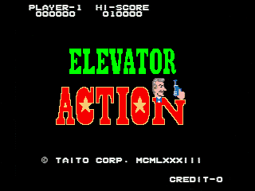
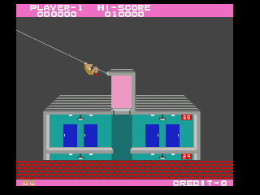
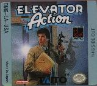

The Definitive Glossary of Elevator Action terms
Several years ago (1997, to be exact) my college roommates and I were
actively playing the game Elevator Action on our original NES machine.
During that time, we came up with a few names for actions, events, or
people in the game. We thought, in an effort to increase the knowledge
of other people on the Net, that we should share this list with others.
Thus, we present The Glossary. (Note, however, that the more specific
of these terms are unique to the NES game -- the Game Boy game is
significantly different in a number of areas.)
NEW! Also, a recent addition. I just (9/99) got a Game Boy
Color, and of course one of the first games I got was Elevator Action.
For those of you who are interested, or have lost yours, I present the
Elevator Action Game Boy Instruction
Manual. A series of scanned images, so you get the best of Taito's
great creation. If you have a problem with this information being
freely available (Taito, I'm talkin' to you), please let me know and
I'll take it down. As far as I know, Taito is no longer making any
money from this game.


Note that the modifiers "Double" and "Triple" (etc.) may be added to
these descriptions as necessary.
- Gunning: Shooting an enemy agent.
- Shanghai Double Gun: When you are shot simultaneously
from both sides by enemy agents.
- Gubernatorial Short Shot: This is the name for gunning an
enemy agent at such short range that the bullet never actually appears.
- Crotching: To jump at an enemy agent and 'kick' them in
order to kill them. (Note that this works even if you pass over a
kneeling enemy agent.) So named because it looks for all the world as
if the sprite representing you is strangling the enemy agent with its
crotch.
- Mississippi Turnaround (AKA Mississippi Double Take):
When you jump at an enemy agent with the intent of killing them, but
turn around in mid-air, thus effectively 'butting' them.
- Miscrotching: When you jump at an enemy agent with the
intent of crotching them, but they gun you before you can get to them.
- Shanding: To gun down a light fixture, crushing an
enemy agent in the process; this also darkens the screen
for a number of seconds, increasing the score for killing an enemy agent.
- Carter Shand: When you gun down a light fixture with
the intent of shanding an enemy agent, but miss.
- Harding Shand: This is when you gun down a fixture with
no intent at all.
- Otissing: When you crush an enemy agent with an elevator.
- Inverse Otis: To crush an enemy agent while he is
standing on top of the elevator.
- Mexican Otis: When an enemy agent walks under an elevator
of his own volition, but when you are not controlling the elevator.
- Cuban Otis: Similar to a Mexican Otis, this is when an
enemy agent not only walks under an elevator of his own volition, but
also while another agent is actively being crushed. This usually
only happens when you are in control of the elevator.
- Nicaraguan Otis: When an enemy agent walks under an elevator
not only of his own volition, but when another enemy agent is in control
of the elevator.
- The Infinitely Recursive Soapbubble Boot Scoot: This is
when you are attempting to Otis an agent, but he seems to recursively
slip out just in time to avoid being crushed (even when walking towards
the elevator). Perhaps he has an invulnerable rubber hat.
- Shafting: This is when an enemy agent is so anxious to
get to you that he jumps down the elevator shaft (to his death). There
is no way to cause this yourself. The appropriate way to use this word
is: "What happened to that guy?" "Man, he shafted." Usually happens in
the higher levels, or during a Spanish-American Spy Spaz (see below).
- Poor Man's Blind Date: When attempting to jump across an
elevator shaft, the elevator comes down upon your head, and you
immediately fall to your doom at the bottom of the shaft.
- Dickensian Wormhole: A nearly inexplicable maneuver,
which involves the player jumping from a moving elevator with the
intention of reaching a given floor, but mysteriously landing on the floor
above that for which he was aiming.
- Micronesia Mud-Shuffle: To twitch back and forth as
quickly as possible, while kneeling and gunning, in order to kill enemy
agents on both sides. (Diametrically opposed to the Shanghai Double
Gun, above.)
- Alabama Sidestep: When you kill an enemy agent (usually
on an elevator) and he dies in the middle of a floor (ie, between
levels).
- Spanish-American Spy Spaz: When you've been going for a
while without getting killed, and suddenly all the enemy agents go
berzerk, usually resulting in your nigh-unavoidable death. Can result
in extremely hilarious behavior on the part of enemy agents, including
multiple Mexican Otises, Shafting (agents can appear to shove each other
into the shaft), etc. as they try to get to you.
- Boznian Double Ballot: When two enemy agents get on a
double elevator, one a floor above, and one a floor below you, and don't
move -- presumably because they're giving conflicting up and down
orders.
- Dudley Q. Gnumbnut: The intensely stupid
denizen of floor thirteen on many levels. This agent immediately
walks away from
you and attempts to gun you via some non-existent "screen wrap"
feature. Note that in the event of a Spanish-American Spy Spaz, he
becomes one of the deadliest agents.
- The Sandinista Buzz-Cut: When you are shot (and rather
improbably killed) in your copious Pompadour-like hair.
- Non-Euclidian Hum-Dinger: While attempting to jump across
the elevator shaft, you impact the elevator "cable," which turns out
upon closer inspection to be a planar surface; you then plummet to your
death.
- The Purely Mythical Upper-Voltan Dildo Dip: ????
Game Boy variants and terms

With the advent of the Game Boy game, I've come up with a few new
terms to describe some quirks of that game.
- The Greg Louganis Swan Dive: While attempting to jump
from the floor you're on to the next floor below you, across the
elevator shaft, you miscalculate and hit the edge of the shaft, causing
your own shafting death.
- The Lower Persian Anti-gravity Death Dance: Having shot an
enemy agent with the shotgun, he's thrown back into an elevator shaft,
where he hovers until his death dance is complete.
We have found that great constructions can take place, such as,
"Wow, that was a Double Inverse Mexican Otis!" to explain that two
enemy agents were simultaneously crushed on top of an elevator while it
was not under the player's control.
Last updated
Wed Aug 2 15:52:11 PDT 2000
Designed and implemented by Ian Johnston.